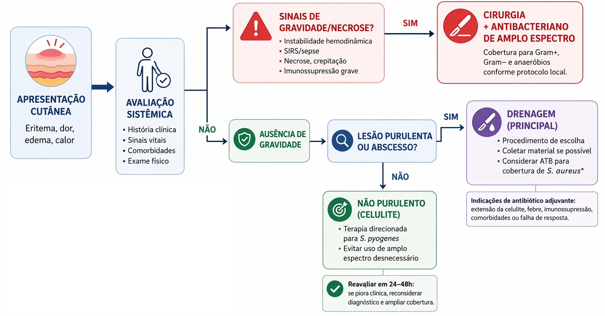

Capítulo 8 — Antibioticoterapia nas Principais Infecções
Infecções de pele e partes moles
As infecções de pele e partes moles abrangem apresentações
distintas, desde infecções superficiais localizadas até
processos profundos e rapidamente progressivos. A presença
de eritema, calor, edema e dor sugere inflamação, mas não
define, isoladamente, uma infecção bacteriana
2,8.
A avaliação deve considerar a presença de purulência ou
coleção, a extensão e a velocidade de progressão da lesão,
sinais de comprometimento sistêmico, profundidade aparente e
condições que modifiquem o risco microbiológico
2,3.
Nas celulites não purulentas, estreptococos estão entre os
principais agentes prováveis. Nos abscessos cutâneos, a
participação de Staphylococcus aureus ganha maior
relevância. Infecções necrosantes, por sua vez, podem ser
monomicrobianas ou polimicrobianas e exigem reconhecimento
e intervenção urgentes 2,3,11.

Purulência, profundidade, velocidade de progressão e
gravidade reorganizam as prioridades da abordagem.
Qual característica muda a prioridade?
Analise três apresentações. Identifique a prioridade sem
partir automaticamente para maior espectro antibacteriano.
Situação 1 de 3
Situação 1
Padrão não purulento
Área unilateral de eritema, calor, edema e dor na perna,
com progressão gradual. Não há abscesso, secreção,
necrose, bolhas, crepitação ou instabilidade clínica.
PurulênciaAusente
ProgressãoGradual
GravidadeSem sinais de gravidade
Comparação concluída
O aspecto da lesão reorganiza a conduta
Não purulentaCobertura dirigida
Na ausência de gravidade, o espectro pode permanecer
direcionado aos agentes mais prováveis.
AbscessoDrenagem do foco
A coleção purulenta precisa ser reconhecida e drenada;
a necessidade de antibacteriano é avaliada em conjunto.
Suspeita de necroseAvaliação cirúrgica urgente
A investigação complementar não deve atrasar
intervenção diante de forte suspeita clínica.
Da apresentação à conduta
Celulite não purulenta
Amplo espectro não é uma exigência automática
Em apresentações superficiais sem purulência ou gravidade,
a cobertura inicial costuma ser dirigida principalmente
aos estreptococos. Exposições específicas e características
individuais podem modificar essa avaliação 3,4.
Abscesso cutâneo
O antibacteriano não substitui a drenagem
A incisão e a drenagem constituem a base da abordagem de
abscessos cutâneos. A indicação de tratamento sistêmico
depende da gravidade, da extensão, da resposta inicial e
das condições associadas 3,11.
Infecção profunda
Alguns sinais indicam risco desproporcional
Dor intensa ou desproporcional ao exame, progressão rápida,
bolhas, necrose, crepitação, anestesia cutânea, toxicidade
sistêmica ou instabilidade aumentam a preocupação com
processo profundo ou necrosante 3,5,11.
Diagnósticos alternativos
Nem todo eritema é infecção
Dermatite de contato, insuficiência venosa, trombose,
reações inflamatórias e outras condições podem simular
celulite. Distribuição, evolução e ausência de resposta
esperada devem motivar reavaliação 2,8.
A conduta é definida pelo padrão clínico. Na celulite não
purulenta, evita-se ampliação desnecessária; no abscesso,
reconhece-se o papel central da drenagem; diante de suspeita
de infecção necrosante, a prioridade é avaliação cirúrgica
imediata associada à abordagem sistêmica.